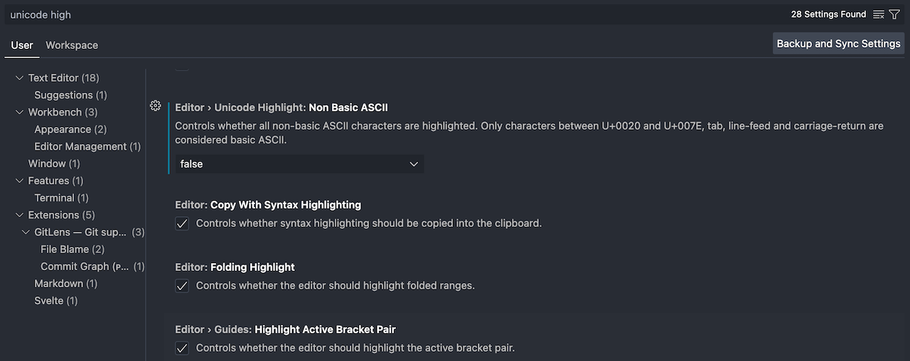

Visual Studio Code에서 한글 입력이 씹히는 문제 해결하기
개인적으로 Visual Studio Code(이하 vscode)의 사용을 종종 꺼리게 만들던 요소로 한글 입력 문제를 꼽고 싶다. macOS에서만 발생하는 지는 잘 모르겠지만, 한글을 입력할 때 어떨 때는 문제가 없다가도 어떨 때는 입력이 마구 씹히거나 글자 완성이 제대로 안 되는 등의 문제를 겪었다.
어차피 Emacs를 선호하기도 해서 이 문제의 원인에 대해 오랜 시간 관심을 가지지 않았지만 최근 Doom Emacs 업데이트 도중 뻑(?)이 나서 vscode를 임시로 써야 했을 때 또 문제를 겪게 되었고 그래서 원인에 대해 관심을 가지게 되었다.
다행히도 원인 및 해결법은 쉽게 발견된 것 같다.
vscode에서 한글 입력이 비정상적인 문제 해결하기
개인적인 경우는 아래와 같은 방식으로 설정 하나만 고치면 해결되었다.
- Settings를 찾아 들어간 후 'Unicode Highlight: Non Basic ASCII' 설정을 찾는다.
- 이 설정의 값을 false로 바꾼다.
 해당 설정이 적용된 상태의 Settings 화면
해당 항목은 간단히 설명도 쓰여있긴 하지만 주로 영문자와 CR 및 LF와 같은 줄바꿈 문자 등을 제외한 문자가 입력될 경우 이를 하이라이트(강조) 처리해 주는 기능인데 아마도 한글이 입력되는 도중에 실행된 하이라이트 렌더링 루틴이 한글의 입력이나 문자 완성을 방해하는 것으로 추정된다.
물론 해당 설정은 특정한 문자로 코드를 방해하는 경우, 예를 들어 세미콜론과 비슷한 문자가 특수문자 영역에도 있는데 이걸 입력해서 코드가 컴파일 될 때 알 수 없는 오류를 일으키게 하는 등의 문제를 미연에 방지하는 데 도움을 줄 수 있다고 생각한다.
하지만 한국인에겐 한글 입력이 제대로 안 되는 문제는 치명적인 만큼 어쩔 수 없는 것 같다.
대안으로 기본 설정인 inUntrustedWorkspace 상태로 놔두고 프로젝트를 Trusted Workspace로 등록해서 작업하는 방법도 있긴 하겠지만 언제 어떻게 어떤 파일을 편집하게 될지는 알 수 없는 운명이다.
어쨌거나 큰 문제가 해결되어 상쾌한 기분이다.